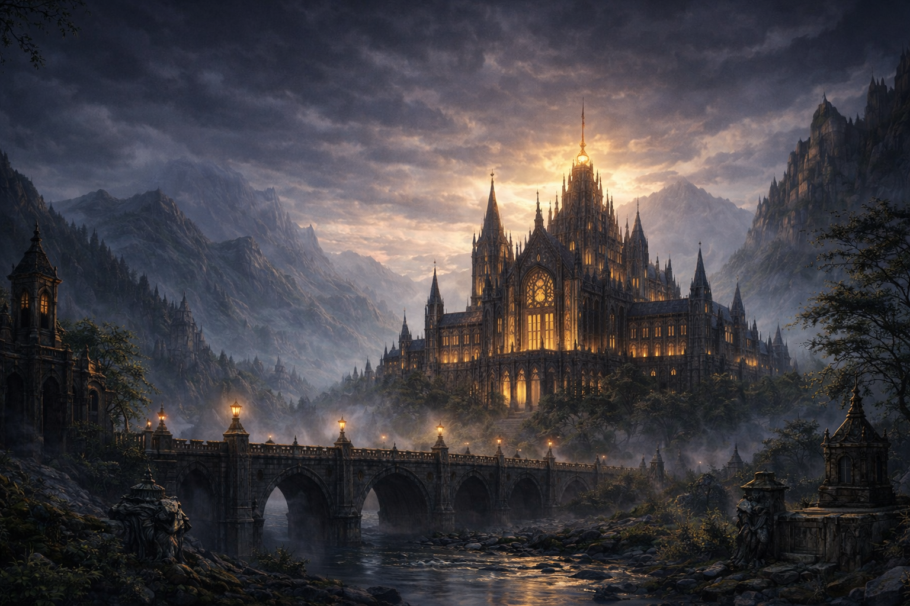
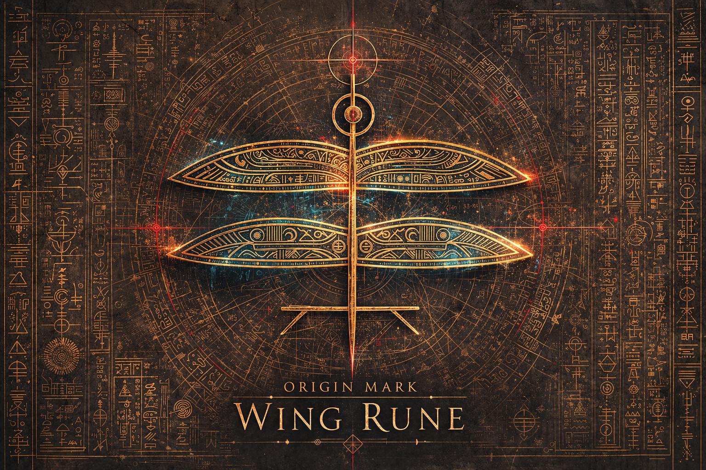
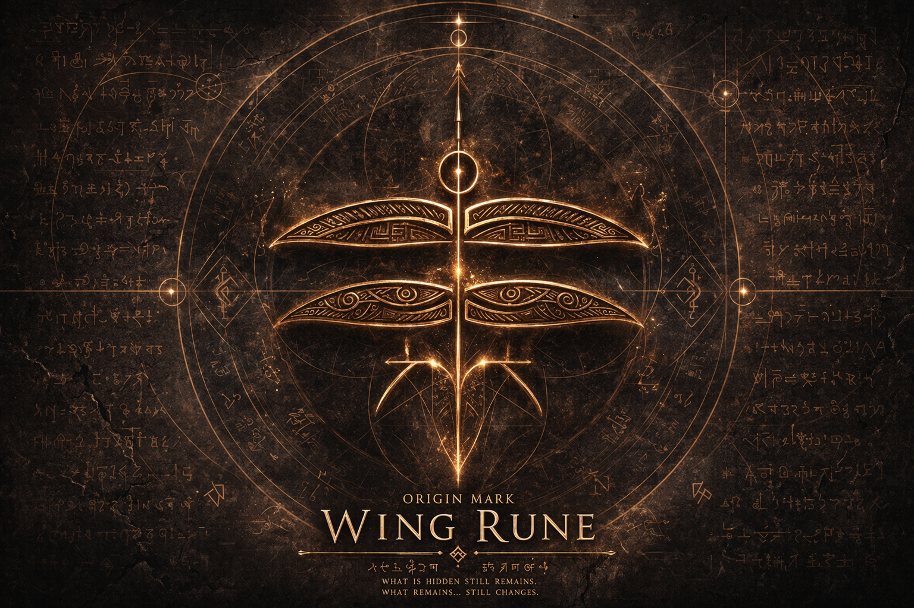
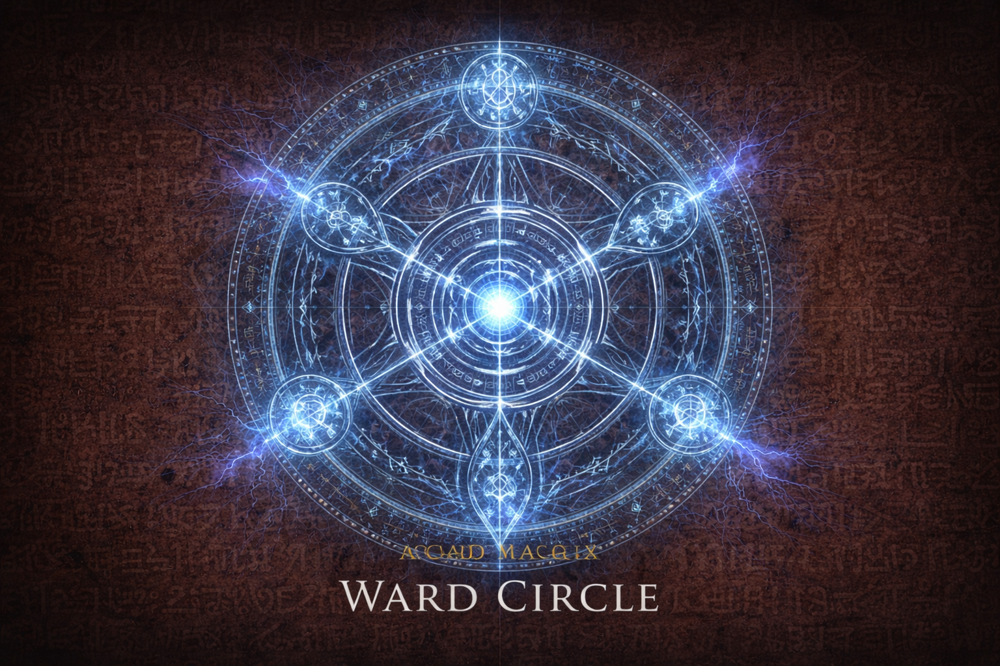
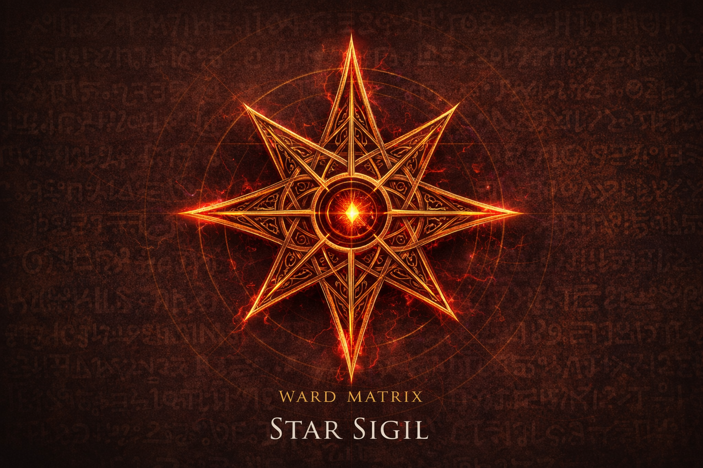
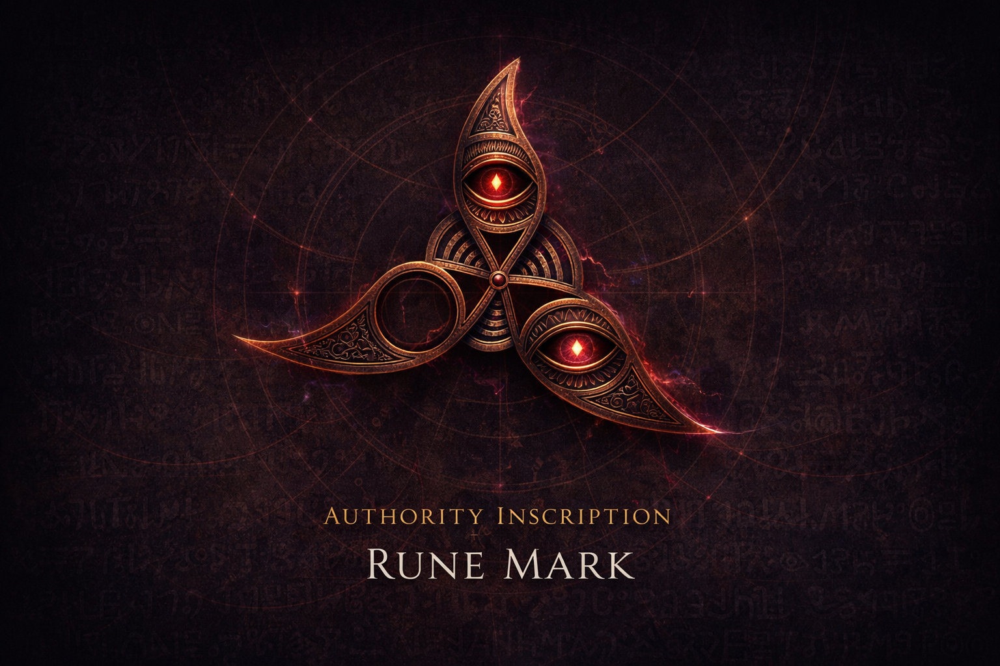

The Institution
A large-scale worldbuilding image centered on atmosphere, architecture, and the institutional weight behind the setting.
Environment Study
Landscape and setting explorations used to establish mood, scale, and narrative tension.

The Staff
Visual studies that help define the emotional presence and mythic silhouette of major figures within the Institute.

Sigil Archive: I
Symbol work that supports the deeper systems, doctrines, and visual identity of the fiction.

Sigil Archive: II
Foundational geometry used in the outer wards.

Sigil Archive: III
A warning symbol indicating threshold pressure.

Sigil Archive: IV
Marks of distributed presence and institutional routing.

Sigil Archive: V
Fracture marks showing where false order fails.

Sigil Archive: VI
The final layer of containment architecture.

The Grand Archive
Scholars studying the deep doctrines and hidden histories of the Institute's earliest days.

The Council
Masters of the Academy convened to discuss threshold pressures and institutional control.

Resonance Analysis
Evaluating magical outputs and tracking fracture patterns across the active lattice.

Grid Activation
Initiates channeling resonance to stabilize the foundational ward structures of the lower levels.

Containment Architecture
Active maintenance of the ward construct, enforcing order over the deeper wrongness below.

Outer Defenses
The visible, elegant manifestation of the Academy's protective wards passing for wisdom.

Elemental Convergence
A high-level institutional ritual demonstrating the sheer scale of managed resonance.

Threshold Breach
The violent reality of false order failing within the stone chambers of the Institute.